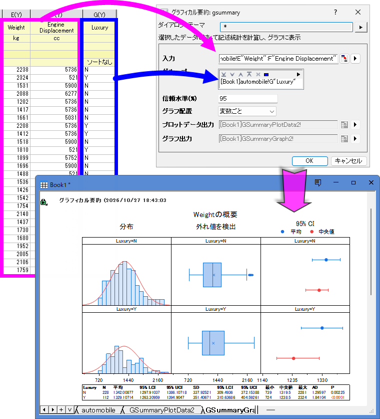
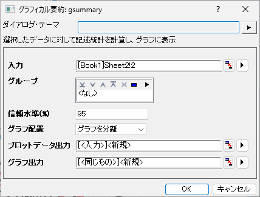

グラフィカル要約
Graphical-Summary
はじめに
このツールでは、グループ情報を含むデータからグラフィカルサマリーレポートを作成します。ヒストグラム、箱ひげ図、信頼区間のプロットなどの統計グラフと、主要な統計量をまとめた表が出力されます。

グラフィカル要約を実行
- 記述統計を実行する入力データ列を選択します。
- 統計 > 記述統計：グラフィカル要約メニューを選択して、ダイアログを開きます。

- グループでグループ化に使用する列を選択し、信頼水準（%）に目的の信頼水準を入力して、グラフ配置ドロップダウンリストからグラフのレイアウトを指定します。
- OKをクリックして、記述統計を確認し、グラフを作成します。
ダイアログの設定
| 入力
|
入力列を選択します。なお、データテーブルもサポートされています。
|
| グループ
|
入力データを複数のグループに分割するための列を選択します。
|
| 信頼水準(%)
|
有意水準を指定します。
|
| グラフ配置
|
統計グラフの配置方法を指定します。
- 各変数とグループごとに個別のグラフを作成します。各グラフには、分布曲線付きのヒストグラム、信頼区間プロット、確率プロットが含まれ、3つの結果テーブルとして「記述統計」、「##% 信頼区間」、および「正規性検定」が表示されます。グラフのタイトルには変数とグループ情報が表示されます。
- 各変数ごとに個別のグラフを作成します。グループは異なる縦方向のパネルにプロットされます。各変数について、分布曲線付きのヒストグラム、外れ値を含む箱ひげ図、信頼区間プロット、および各グループの統計情報を行ごとにまとめたテーブルが表示されます。
- 各グループをそれぞれ別のグラフにプロットします。変数は異なる縦方向のパネルにプロットされます。各グループについて、分布曲線付きのヒストグラム、外れ値を含む箱ひげ図、信頼区間プロット、および各グループの統計情報を行ごとにまとめたテーブルが表示されます。
- すべての変数とグループを1つのグラフにプロットします。各サブセット（グループ * 変数）は異なる縦方向のパネルにプロットされます。このグラフには、分布曲線付きのヒストグラム、外れ値を含む箱ひげ図、信頼区間プロット、および各サブセットの統計量を行ごとにまとめた表が表示されます。
|